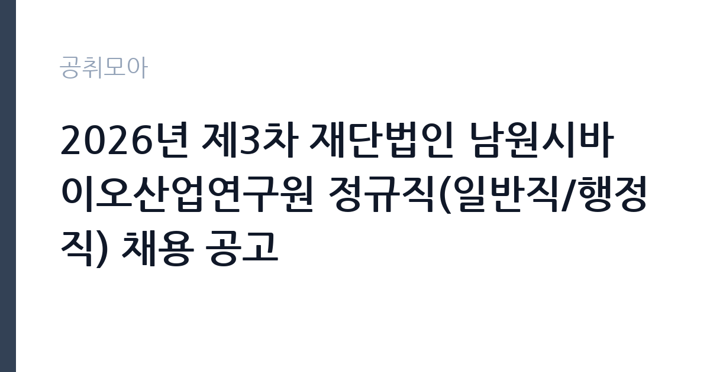

[공공기관] 2026년 제3차 재단법인 남원시바이오산업연구원 정규직(일반직/행정직) 채용 공고
재단법인남원시바이오산업연구원 · 전북 · 마감 2026-10-27 (D-15) · 출처 나라일터

한눈에 보는 모집 조건
| 기관 | 재단법인남원시바이오산업연구원 |
|---|---|
| 공고명 | 2026년 제3차 재단법인 남원시바이오산업연구원 정규직(일반직/행정직) 채용 공고 |
| 고용형태 | 정규직 |
| 근무지 | 전북 |
| 게시일 | 2026-10-12 |
| 마감일 | 2026-10-27 (D-15) |
지원자격, 이렇게 읽으세요
- 선임급 1명
- 접수 ~2026-10-27 마감
- 세부 조건은 원문 공고문 확인
자격요건은 채용공고문 참조로 안내되어 있으므로 원문 확인이 필수입니다. 선임급 채용인 만큼 해당 분야 실무 경력을 요구할 가능성이 크며, 기업네트워크 분야 특성상 기업 지원과 산학협력, 네트워크 구축 관련 경험이 평가 요소가 될 전망입니다. 지원 시 주의하실 점은 접수 기간의 시작일입니다. 공고 게시일은 10월 12일이지만 접수는 10월 19일부터 시작되므로, 시작일 이전에 제출된 서류는 유효하지 않을 수 있습니다. 접수 마감은 10월 27일 17시 도착분에 한하므로, 우편과 방문 접수는 이동 시간을 감안해 최소 이틀 전 발송과 방문을 권장합니다. 이메일 접수자는 발송 시각과 수신 확인 여부를 반드시 점검하시기 바랍니다. 문의처는 063-633-8600 인사담당자이며, 주소는 전북특별자치도 남원시 시묘길 43 연구원 A동 1층입니다.
이 공고의 포인트
해당 공고의 첫 번째 포인트는 정규직 선임급 1명 선발이라는 점입니다. 지방 출자출연 연구원의 선임급 행정직은 공고가 자주 게시되지 않아 해당 지역 취준생의 관심이 집중됩니다. 두 번째 포인트는 기관의 경영평가 S등급입니다. 2026년 평가에서 95.41점을 받아 최고 등급을 획득했다는 사실은 기관의 재정 안정성과 운영 역량을 보여주는 지표이며, 지원 동기의 근거로 활용할 수 있습니다. 세 번째 포인트는 기업네트워크 분야의 확장성입니다. 바이오소재 산업 육성과 수출 지원, 창업과 기술성장 플랫폼 운영 등 연구원의 사업이 성장 국면에 있어 해당 직무의 역할이 커지고 있습니다. 모집 인원이 1명이므로 서류 완성도가 당락을 좌우한다는 점을 염두에 두시기 바랍니다.
전형은 어떻게 진행되나
전형 절차는 원문 공고문에서 확인하시기 바랍니다. 일반적으로 지방 출자출연기관의 정규직 채용은 서류전형과 필기 또는 실무 평가, 면접전형의 순서로 진행됩니다. 선임급 채용에서는 직무수행계획서와 경력 기술서의 비중이 크므로, 기업 지원과 네트워크 구축 분야의 실적을 체계적으로 정리하시기 바랍니다. 서류전형 통과 후 면접에서는 기관 사업 이해도와 직무 전문성, 남원 지역 정착 의지를 종합적으로 평가하는 경우가 많습니다. 접수 기간이 10월 19일부터 27일까지로 9일간이므로, 경력증명서와 자격증 사본 등 증빙 서류를 미리 발급받아 두시는 것이 좋습니다. 이후 일정은 연구원 홈페이지 공지사항과 개별 안내를 확인하시기 바랍니다.
원문에서 확인한 전형 방식
○ 모집분야 : 기업네트워크 ○ 채용형태 : 정규직(수습기간 적용) ○ 직급(직렬/직종) : 선임급(일반직/행정직) ○ 자격요건 : 채용공고문 참조 ○ 접수기간 : 2026년10월19일 ~ 2026년10월27일 (17:00 이내 도착분에 한함) ○ 응시방법 : 이메일(-recruit@nbn.re.kr), 우편접수 or 방문접수 ○ 문의처 : 063-633-8600 (인사담당자) ○ 주 소 : 전북특별자치도 남원시 시묘길 43 (노암동) (재)남원시바이오산업연구원 A동 1층 인사담당자
이런 분께 추천해요
- 바이오와 식품, 화장품 소재 분야 기업 지원과 산학협력 업무 경험이 있는 분께 추천합니다.
- 전북 남원 지역 공공기관 정규직을 목표로 하며 정착 의지가 확실한 분께 추천합니다.
- 행정 실무 경력을 살려 성장 국면의 연구원에서 핵심 역할을 맡고 싶은 분께 추천합니다.
지원 전 체크리스트
- 자격요건 원문 확인 항목입니다. 선임급 요건과 기업네트워크 분야 세부 조건을 공고문에서 반드시 확인하시기 바랍니다.
- 접수 시작일 준수 항목입니다. 10월 19일 이전 제출은 유효하지 않을 수 있으니 접수 시작 후에 제출하시기 바랍니다.
- 마감 시각 엄수 항목입니다. 10월 27일 17시 도착분이 기준이므로 우편과 방문은 여유 있게 움직이시기 바랍니다.
- 증빙 서류 완비 항목입니다. 경력증명서와 자격증 등 증빙이 미비하면 서류 심사에서 불이익을 받을 수 있습니다.
모집 일정과 제출 타이밍
공고 게시일은 2026년 10월 12일이며 접수 기간은 10월 19일부터 10월 27일 17시까지입니다. 접수 시작 전 기간을 서류 준비에 활용하시고, 시작일 이후에는 가급적 초반에 제출해 접수 오류에 대비하시기 바랍니다. 응시 방법은 이메일과 우편, 방문 접수이며, 문의처는 063-633-8600 인사담당자입니다. 이후 전형 일정은 원문 공고문과 연구원 홈페이지 안내를 수시로 확인하시기 바랍니다.
직무 이해하기: 공공기관
기업네트워크 분야의 실무를 이해하면 지원서 작성이 수월해집니다. 바이오산업 연구원의 기업네트워크 담당자는 입주와 육성 기업 지원, 산학연 협력 네트워크 구축과 운영, 기술사업화와 수출 연계 지원 업무를 맡습니다. 연구개발 성과를 기업 현장으로 연결하는 다리 역할이므로, 연구자와 기업 담당자 사이를 조율하는 소통 역량이 중요합니다. 남원시바이오산업연구원은 기능성 중심 소재개발과 안정적인 원료 공급을 핵심 방향으로 삼고 있어, 소재와 식품, 화장품 분야 기업 생태계에 대한 이해가 실무에 도움이 됩니다. 행정직으로서 사업비 집행과 성과 관리, 평가 대응 업무도 함께 담당하게 됩니다.
자기소개서 작성 팁
자기소개서는 기업 지원과 네트워크 분야 실적을 구체적으로 서술하는 것이 핵심입니다. 지원했던 기업 수와 사업화 성과, 구축했던 협력 네트워크의 규모처럼 측정 가능한 내용을 적시하시기 바랍니다. 기관 이해 항목에서는 바이오소재 산업 육성과 S등급 경영평가 같은 기관 성과를 언급하며, 행정 담당자로서 해당 성과를 어떻게 뒷받침할지 연결하시기 바랍니다. 선임급 채용이므로 입사 후 추진하고 싶은 과제를 직무수행계획 수준으로 구체화하면 좋은 평가를 받을 수 있습니다. 남원 지역 근무에 대한 정착 의지도 진정성 있게 서술하시기 바랍니다.
면접 준비 포인트
면접에서는 직무 전문성과 기관 이해도, 정착 의지가 핵심 평가 요소입니다. 기업네트워크 분야는 협력 사업 기획 경험과 이해관계자 조율 사례를 묻는 질문에 대비하시기 바랍니다. 연구원의 주요 사업인 바이오소재 개발과 원료 공급, 기업 성장 플랫폼 운영에 대한 기본 이해를 보여주시면 좋은 인상을 남길 수 있습니다. 경영평가 S등급 획득 배경과 향후 과제에 대한 견해를 묻는 질문이 나올 수도 있습니다. 선임급으로서 후배 직원 지도와 조직 기여 방안에 대한 질문도 예상되므로, 리더십 경험을 정리해 두시기 바랍니다.
급여·근무조건 읽는 법
급여 수준은 원문에서 확인하시기 바랍니다. 이번 공고문에 별도 보수표가 포함되어 있지 않으므로, 초임 호봉과 수당 체계는 접수 전 문의처인 063-633-8600 인사담당자를 통해 확인하시는 것을 권장합니다. 지방 출자출연기관의 보수는 기관 보수규정에 따라 호봉을 획정하는 구조이며, 수당과 상여, 복리후생 항목은 기관마다 차이가 있습니다. 지원 전에는 기본급과 수당, 상여를 구분해 총보수 수준을 파악하시고, 실수령액은 4대 보험과 세금 공제 후 금액으로 계산하시기 바랍니다. 경쟁률과 합격선 역시 기관이 공개한 자료가 없으므로 별도로 인용하지 않습니다.
자주 묻는 질문
- 접수 시작일인 10월 19일 이전에 미리 제출해도 됩니까?
공고상 접수 기간이 10월 19일부터이므로 시작일 이전 제출은 유효하지 않을 수 있습니다. 시작일 이후에 제출하시기 바랍니다. - 수습기간이 적용되면 정규직이 아닙니까?
수습기간 적용 정규직은 수습 평가를 거쳐 정식 임용되는 정규직 채용 방식입니다. 수습 조건의 세부 내용은 원문 공고문에서 확인하시기 바랍니다. - 타 지역 거주자도 지원할 수 있습니까?
공고상 거주지 제한이 별도로 안내되어 있지 않으므로 지원 가능합니다. 다만 면접에서 지역 정착 의지를 평가할 수 있으니 준비하시기 바랍니다.
함께 보면 좋은 공고
[공공기관] 대한법률구조공단 원주출장소 청년인턴 공개경쟁 채용시험 공고 — 마감 2026-10-27[공공기관] 2026년 학산공원국민체육센터 GX 프로그램 강사(명상) 위촉공고 — 마감 2026-10-15[공공기관] 2026년 주택도시보증공사 시니어 민원·상담 도우미 채용공고 — 마감 2026-10-19출처: 나라일터 공개정보를 바탕으로 공취모아가 정리한 안내글입니다. 모집 조건·일정은 변경될 수 있으니 지원 전 반드시 원문 공고문을 확인하세요. 본 글은 정보 제공용이며 합격을 보장하지 않습니다.